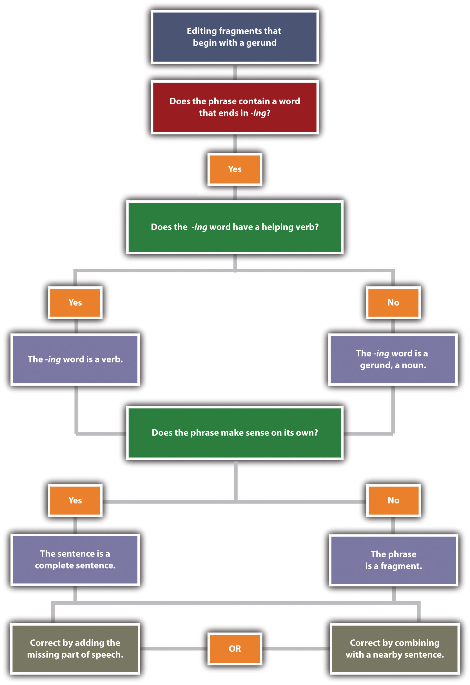
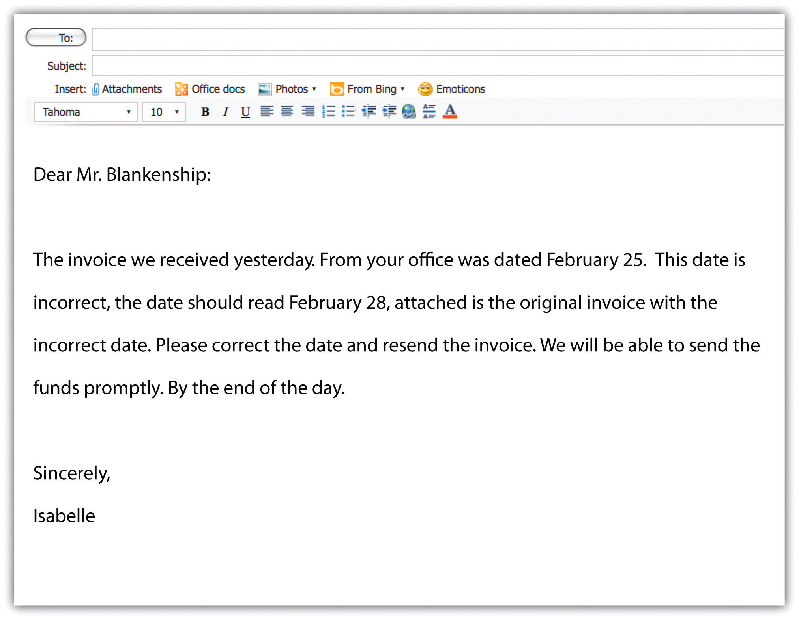

Imagine you are reading a book for school. You need to find important details that you can use for an assignment. However, when you begin to read, you notice that the book has very little punctuation. Sentences fail to form complete paragraphs and instead form one block of text without clear organization. Most likely, this book would frustrate and confuse you. Without clear and concise sentences, it is difficult to find the information you need.
For both students and professionals, clear communication is important. Whether you are typing an e-mail or writing a report, it is your responsibility to present your thoughts and ideas clearly and precisely. Writing in complete sentences is one way to ensure that you communicate well. This section covers how to recognize and write basic sentence structures and how to avoid some common writing errors.
Clearly written, complete sentences require key information: a subject, a verb and a complete idea. A sentence needs to make sense on its own. Sometimes, complete sentences are also called independent clauses. A clauseA group of words that contains a subject and a verb and may make up a complete sentence. is a group of words that may make up a sentence. An independent clauseA group of words that contains a subject and a verb and can stand alone as a complete, grammatically correct thought. An independent clause is a complete sentence. is a group of words that may stand alone as a complete, grammatically correct thought. The following sentences show independent clauses.

All complete sentences have at least one independent clause. You can identify an independent clause by reading it on its own and looking for the subject and the verb.
When you read a sentence, you may first look for the subjectA word that tells who or what the sentence is about. Subjects are usually nouns or pronouns., or what the sentence is about. The subject usually appears at the beginning of a sentence as a nounA word that identifies a person, place, thing, or idea. or a pronounA word that substitutes for a noun; for example, I, you, he, she, it, we, or they.. A noun is a word that identifies a person, place, thing, or idea. A pronoun is a word that replaces a noun. Common pronouns are I, he, she, it, you, they, and we. In the following sentences, the subject is underlined once.
In these sentences, the subject is a person: Malik. The pronoun He replaces and refers back to Malik.
In the first sentence, the subject is a place: computer lab. In the second sentence, the pronoun It substitutes for computer lab as the subject.

In the first sentence, the subject is a thing: project. In the second sentence, the pronoun It stands in for the project.
In this chapter, please refer to the following grammar key:
A sentence may have more than one person, place, or thing as the subject. These subjects are called compound subjectsA subject that contains two or more nouns or pronouns joined by the words and, or, or nor.. Compound subjects are useful when you want to discuss several subjects at once.
You will often read a sentence that has more than one noun or pronoun in it. You may encounter a group of words that includes a prepositionType of word that connects a noun, pronoun, or verb to another word that describes or modifies it. Common prepositions include in, on, under, near, by, with, and about. with a noun or a pronoun. Prepositions connect a noun, pronoun, or verb to another word that describes or modifies that noun, pronoun, or verb. Common prepositions include in, on, under, near, by, with, and about. A group of words that begin with a preposition is called a prepositional phraseA group of words that begins with a preposition.. A prepositional phrase begins with a preposition and modifies or describes a word. It cannot act as the subject of a sentence. The following circled phrases are examples of prepositional phrases.

Read the following sentences. Underline the subjects, and circle the prepositional phrases.
Once you locate the subject of a sentence, you can move on to the next part of a complete sentence: the verbA word that tells what the subject is doing or links the subject to a describing word.. A verb is often an action word that shows what the subject is doing. A verb can also link the subject to a describing word. There are three types of verbs that you can use in a sentence: action verbs, linking verbs, or helping verbs.
A verb that connects the subject to an action is called an action verbA verb that identifies the action the subject performs.. An action verb answers the question what is the subject doing? In the following sentences, the words underlined twice are action verbs.

A verb can often connect the subject of the sentence to a describing word. This type of verb is called a linking verbA verb that connects or links the subject of a sentence to a noun or adjective. because it links the subject to a describing word. In the following sentences, the words underlined twice are linking verbs.

If you have trouble telling the difference between action verbs and linking verbs, remember that an action verb shows that the subject is doing something, whereas a linking verb simply connects the subject to another word that describes or modifies the subject. A few verbs can be used as either action verbs or linking verbs.
Although both sentences use the same verb, the two sentences have completely different meanings. In the first sentence, the verb describes the boy’s action. In the second sentence, the verb describes the boy’s appearance.
A third type of verb you may use as you write is a helping verbVerbs that are used with a main verb to describe mood or tense. The helping verb is usually a form of be, do, or have.. Helping verbs are verbs that are used with the main verb to describe a mood or tense. Helping verbs are usually a form of be, do, or have. The word can is also used as a helping verb.
Whenever you write or edit sentences, keep the subject and verb in mind. As you write, ask yourself these questions to keep yourself on track:
Subject: Who or what is the sentence about?
Verb: Which word shows an action or links the subject to a description?
Copy each sentence onto your own sheet of paper and underline the verb(s) twice. Name the type of verb(s) used in the sentence in the space provided (LV, HV, or V).
Now that you know what makes a complete sentence—a subject and a verb—you can use other parts of speech to build on this basic structure. Good writers use a variety of sentence structures to make their work more interesting. This section covers different sentence structures that you can use to make longer, more complex sentences.
Six basic subject-verb patterns can enhance your writing. A sample sentence is provided for each pattern. As you read each sentence, take note of where each part of the sentence falls. Notice that some sentence patterns use action verbs and others use linking verbs.


When you write a sentence with a direct object (DO), make sure that the DO receives the action of the verb.

In this sentence structure, an indirect objectA noun or pronoun in a sentence that answers to whom or to what the action is being done. The indirect object comes before the direct object in a sentence. explains to whom or to what the action is being done. The indirect object is a noun or pronoun, and it comes before the direct object in a sentence.

Use what you have learned so far to bring variety in your writing. Use the following lines or your own sheet of paper to write six sentences that practice each basic sentence pattern. When you have finished, label each part of the sentence (S, V, LV, N, Adj, Adv, DO, IO).
Collaboration
Find an article in a newspaper, a magazine, or online that interests you. Bring it to class or post it online. Then, looking at a classmate’s article, identify one example of each part of a sentence (S, V, LV, N, Adj, Adv, DO, IO). Please share or post your results.
The sentences you have encountered so far have been independent clauses. As you look more closely at your past writing assignments, you may notice that some of your sentences are not complete. A sentence that is missing a subject or a verb is called a fragmentAn incomplete sentence that results when a subject or a verb is missing.. A fragment may include a description or may express part of an idea, but it does not express a complete thought.
Fragment: Children helping in the kitchen.
Complete sentence: Children helping in the kitchen often make a mess.
You can easily fix a fragment by adding the missing subject or verb. In the example, the sentence was missing a verb. Adding often make a mess creates an S-V-N sentence structure.
Figure 2.1 Editing Fragments That Are Missing a Subject or a Verb

See whether you can identify what is missing in the following fragments.
Fragment: Told her about the broken vase.
Complete sentence: I told her about the broken vase.
Fragment: The store down on Main Street.
Complete sentence: The store down on Main Street sells music.
Fragments often occur because of some common error, such as starting a sentence with a preposition, a dependent word, an infinitiveA verb form that combines the word to with a verb, such as to buy, to go, or to gather., or a gerundA verb form ending in -ing that is used as a noun, such as running, writing, or celebrating.. If you use the six basic sentence patterns when you write, you should be able to avoid these errors and thus avoid writing fragments.
When you see a preposition, check to see that it is part of a sentence containing a subject and a verb. If it is not connected to a complete sentence, it is a fragment, and you will need to fix this type of fragment by combining it with another sentence. You can add the prepositional phrase to the end of the sentence. If you add it to the beginning of the other sentence, insert a comma after the prepositional phrase.
Figure 2.2 Editing Fragments That Begin with a Preposition

Example A

Example B
Clauses that start with a dependent wordThe first word in a dependent clause. Common dependent words are since, because, without, unless, and so on.—such as since, because, without, or unless—are similar to prepositional phrases. Like prepositional phrases, these clauses can be fragments if they are not connected to an independent clause containing a subject and a verb. To fix the problem, you can add such a fragment to the beginning or end of a sentence. If the fragment is added at the beginning of a sentence, add a comma.


When you encounter a word ending in -ing in a sentence, identify whether or not this word is used as a verb in the sentence. You may also look for a helping verb. If the word is not used as a verb or if no helping verb is used with the -ing verb form, the verb is being used as a noun. An -ing verb form used as a noun is called a gerund.

Once you know whether the -ing word is acting as a noun or a verb, look at the rest of the sentence. Does the entire sentence make sense on its own? If not, what you are looking at is a fragment. You will need to either add the parts of speech that are missing or combine the fragment with a nearby sentence.
Figure 2.3 Editing Fragments That Begin with Gerunds
Incorrect: Taking deep breaths. Saul prepared for his presentation.
Correct: Taking deep breaths, Saul prepared for his presentation.
Correct: Saul prepared for his presentation. He was taking deep breaths.
Incorrect: Congratulating the entire team. Sarah raised her glass to toast their success.
Correct: She was congratulating the entire team. Sarah raised her glass to toast their success.
Correct: Congratulating the entire team, Sarah raised her glass to toast their success.
Another error in sentence construction is a fragment that begins with an infinitive. An infinitive is a verb paired with the word to; for example, to run, to write, or to reach. Although infinitives are verbs, they can be used as nouns, adjectives, or adverbs. You can correct a fragment that begins with an infinitive by either combining it with another sentence or adding the parts of speech that are missing.
Incorrect: We needed to make three hundred more paper cranes. To reach the one thousand mark.
Correct: We needed to make three hundred more paper cranes to reach the one thousand mark.
Correct: We needed to make three hundred more paper cranes. We wanted to reach the one thousand mark.
Copy the following sentences onto your own sheet of paper and circle the fragments. Then combine the fragment with the independent clause to create a complete sentence.
Just as short, incomplete sentences can be problematic, lengthy sentences can be problematic too. Sentences with two or more independent clauses that have been incorrectly combined are known as run-on sentencesA sentence made up of two or more independent clauses that have been incorrectly combined.. A run-on sentence may be either a fused sentence or a comma splice.
Fused sentence: A family of foxes lived under our shed young foxes played all over the yard.
Comma splice: We looked outside, the kids were hopping on the trampoline.
When two complete sentences are combined into one without any punctuation, the result is a fused sentenceA run-on sentence created by two complete sentences combined into one without any punctuation.. When two complete sentences are joined by a comma, the result is a comma spliceA run-on sentence created by two complete sentences separated only by a single comma.. Both errors can easily be fixed.
One way to correct run-on sentences is to correct the punctuation. For example, adding a period will correct the run-on by creating two separate sentences.

Using a semicolon between the two complete sentences will also correct the error. A semicolon allows you to keep the two closely related ideas together in one sentence. When you punctuate with a semicolon, make sure that both parts of the sentence are independent clauses. For more information on semicolons, see Section 2.4.2 "Capitalize Proper Nouns".
Run-on: The accident closed both lanes of traffic we waited an hour for the wreckage to be cleared.
Complete sentence: The accident closed both lanes of traffic; we waited an hour for the wreckage to be cleared.
When you use a semicolon to separate two independent clauses, you may wish to add a transition word to show the connection between the two thoughts. After the semicolon, add the transition word and follow it with a comma. For more information on transition words, see Chapter 8 "The Writing Process: How Do I Begin?".
Run-on: The project was put on hold we didn’t have time to slow down, so we kept working.
Complete sentence: The project was put on hold; however, we didn’t have time to slow down, so we kept working.
You can also fix run-on sentences by adding a comma and a coordinating conjunctionA word that links two independent clauses. Common coordinating conjunctions are for, and, nor, but, or, yet, and so.. A coordinating conjunction acts as a link between two independent clauses.
These are the seven coordinating conjunctions that you can use: for, and, nor, but, or, yet, and so. Use these words appropriately when you want to link the two independent clauses. The acronym FANBOYS will help you remember this group of coordinating conjunctions.
Run-on: The new printer was installed, no one knew how to use it.
Complete sentence: The new printer was installed, but no one knew how to use it.
Adding dependent words is another way to link independent clauses. Like the coordinating conjunctions, dependent words show a relationship between two independent clauses.
Run-on: We took the elevator, the others still got there before us.
Complete sentence: Although we took the elevator, the others got there before us.
Run-on: Cobwebs covered the furniture, the room hadn’t been used in years.
Complete sentence: Cobwebs covered the furniture because the room hadn’t been used in years.
Figure 2.4 Sample e-mail
Isabelle’s e-mail opens with two fragments and two run-on sentences containing comma splices. The e-mail ends with another fragment. What effect would this e-mail have on Mr. Blankenship or other readers? Mr. Blankenship or other readers may not think highly of Isaebelle’s communication skills or—worse—may not understand the message at all! Communications written in precise, complete sentences are not only more professional but also easier to understand. Before you hit the “send” button, read your e-mail carefully to make sure that the sentences are complete, are not run together, and are correctly punctuated.
A reader can get lost or lose interest in material that is too dense and rambling. Use what you have learned about run-on sentences to correct the following passages:
Using the six basic sentence structures, write one of the following: